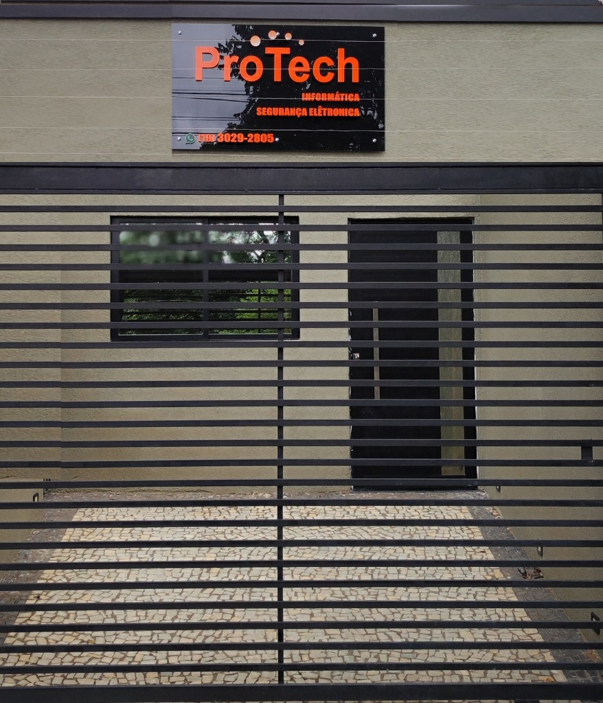
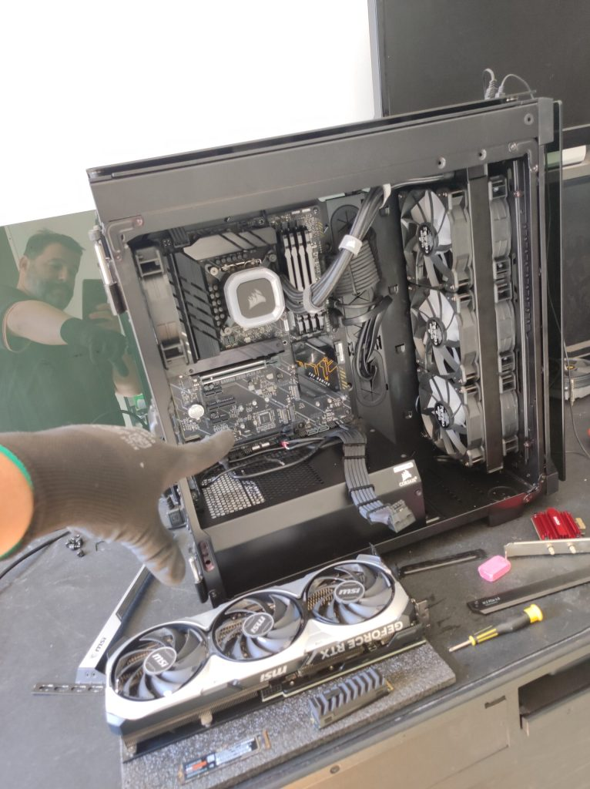
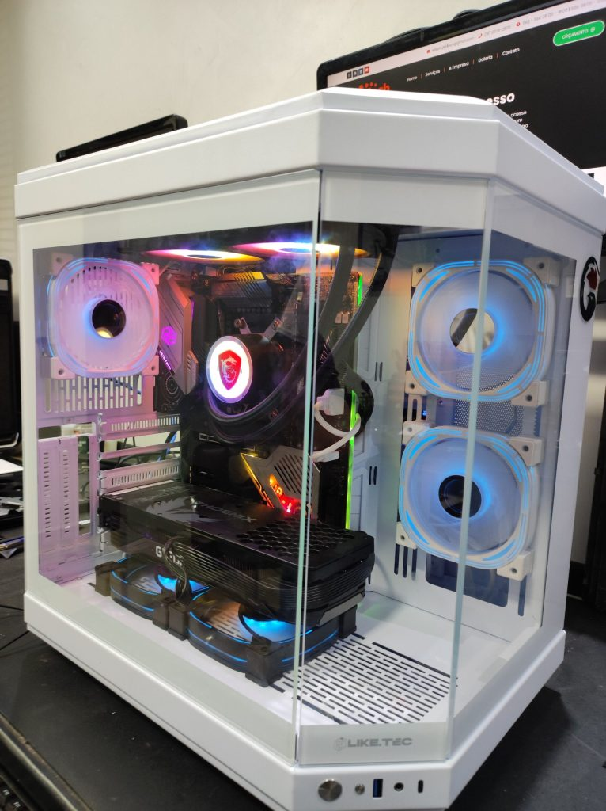
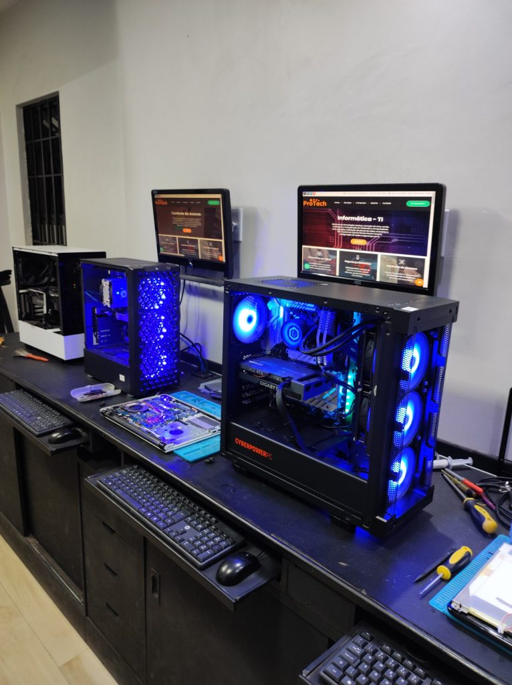
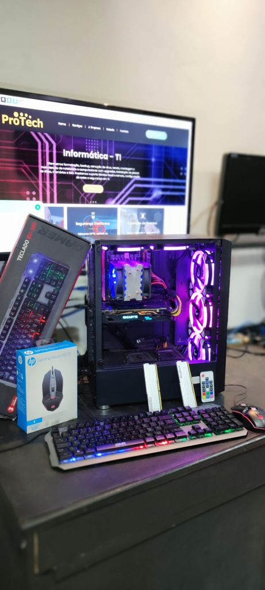

Notebooks
Formatacao, upgrades, troca de tela, teclado, bateria, limpeza interna e analise de placa.
Campinas | bancada propria | garantia
Assistencia tecnica para notebooks, computadores, PCs gamers e servidores, com diagnostico claro e reparos feitos por quem vive hardware de verdade.
Do notebook de trabalho ao setup gamer, a Protech combina diagnostico objetivo, componentes adequados e comunicacao simples.
Formatacao, upgrades, troca de tela, teclado, bateria, limpeza interna e analise de placa.
Montagem, reparo, otimizacao, backup, fonte, armazenamento e instabilidade de sistema.
Airflow, temperatura, fonte, placa de video, upgrades e montagem com acabamento limpo.
Manutencao preventiva, diagnostico de falhas, armazenamento e suporte para rotinas criticas.

O atendimento ideal e direto: entender o problema, testar antes de prometer, explicar o caminho e entregar o equipamento funcionando como deveria.
Veja exemplos de manutencao, montagem e testes feitos em bancada para entender o cuidado antes mesmo de chamar no WhatsApp.




Atendimento direto para quem depende do equipamento: voce explica o problema, recebe orientacao clara e acompanha o reparo sem enrolacao.
Atendimento na Rua Ernani Pereira Lopes, com contato por WhatsApp para confirmar o melhor horario antes de levar o equipamento.